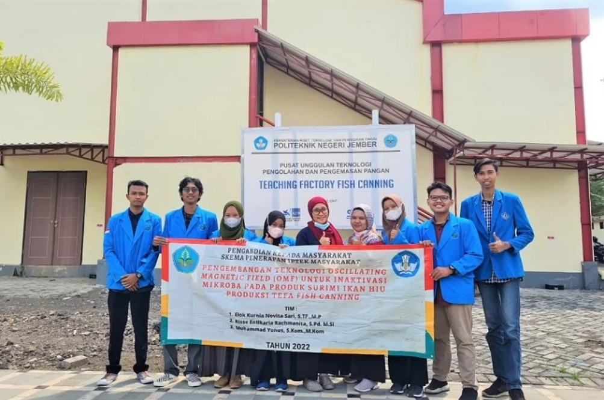
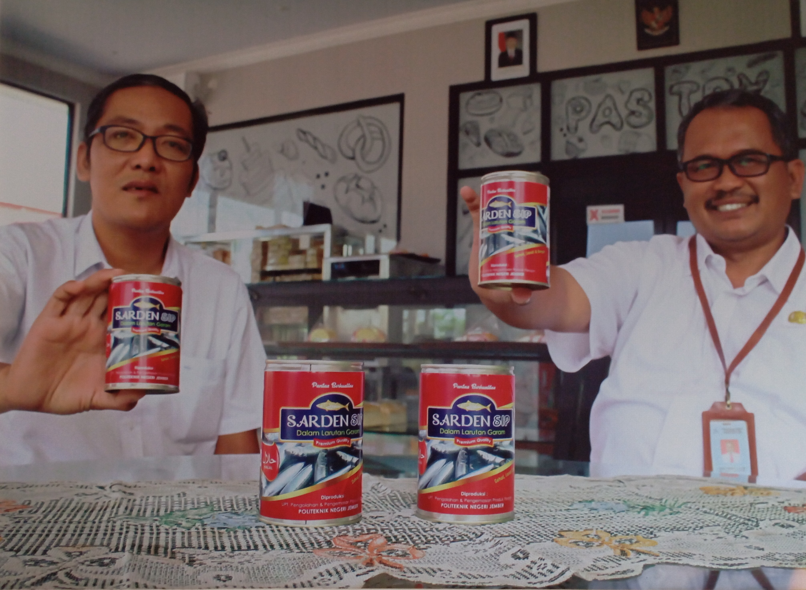

Berita Pencapaian

Pencapaian
Cetar! Dosen Polije Kembangkan Produk Surimi
Dosen Polije berhasil mengembangkan produk surimi yang inovatif dan berkualitas tinggi.
25 Januari 2024

Pencapaian
Sarden SIP raih juara pertama lomba inovasi...
Prestasi membanggakan dengan meraih juara pertama dalam lomba inovasi produk pangan tingkat nasional.
20 Januari 2024